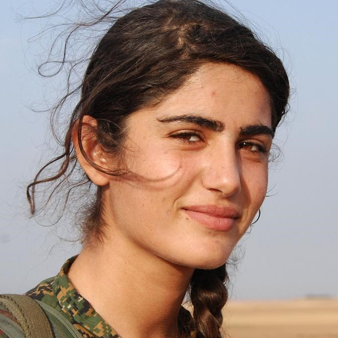
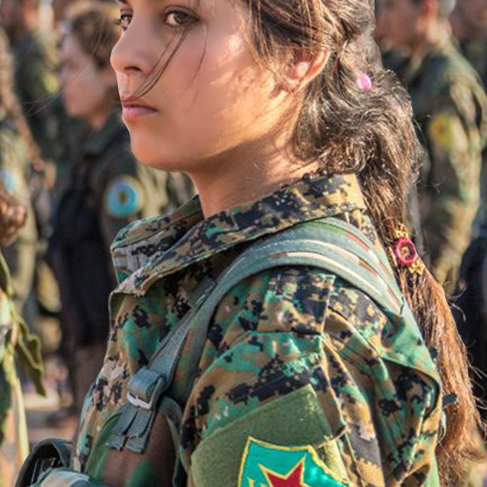
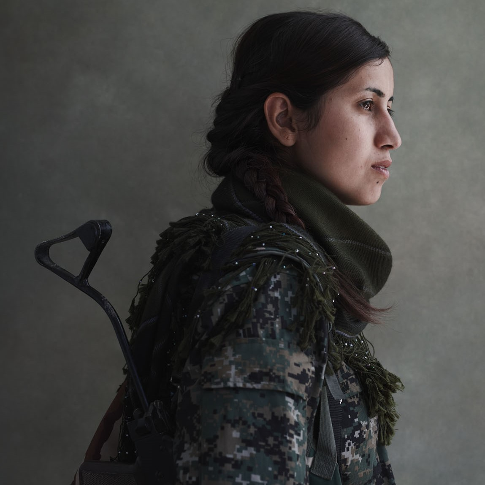
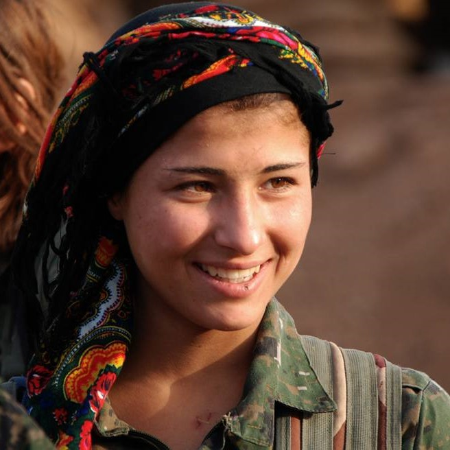
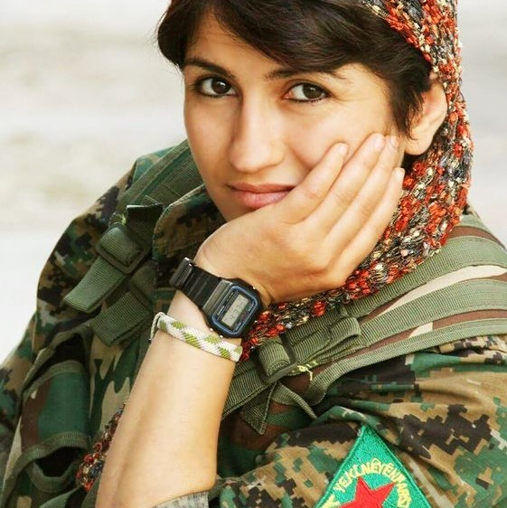
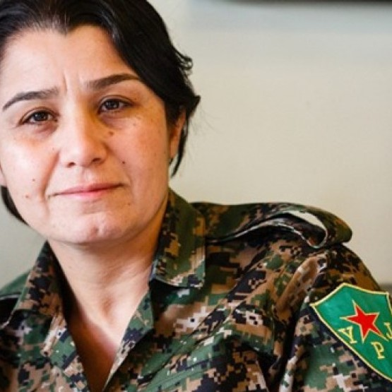
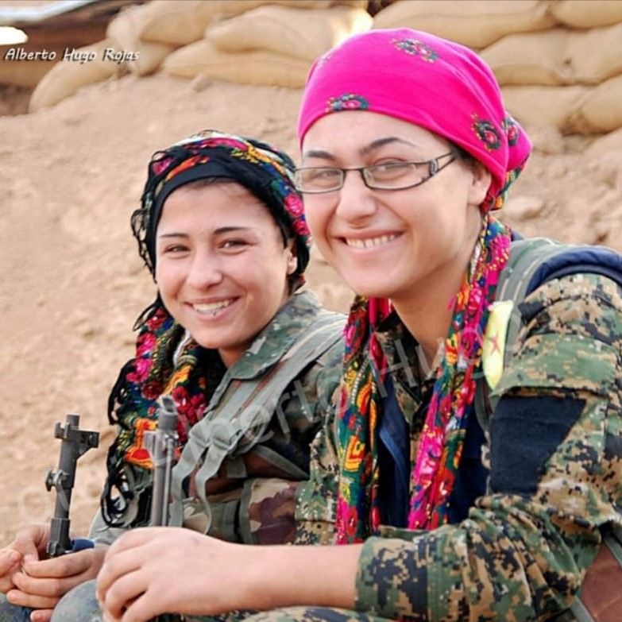
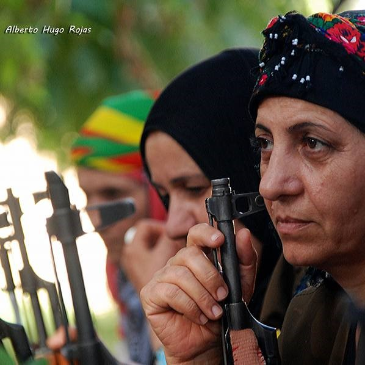

POVO CURDO E SUA LUTA POR UM TERRITÓRIO
O povo Curdo possui uma população estimada de 35 milhões de pessoas e são um grupo étnico que não tem um território. Após ter seu território desmanchado no século XVII, ficaram divididos entre os Impérios Otomano e Iraniano.
Ao fim da Primeira Guerra Mundial, o Império Otomano foi derrotado e países ocidentais planejaram a criação de um Tratado, onde contemplava a criação oficial do Curdistão. Contudo, em 1923, foi criado um novo Tratado que definiu as fronteiras da Turquia e ignorou o povo curdo, passando a ser considerado como minoritário para os turcos e brutalmente repreendido. Desde então, o povo curdo, com idioma e cultura definidos há séculos, luta pela retomada e oficialização de seu Estado, o Curdistão.
Hoje, eles se estabelecem entre 5 países (Turquia, Iraque, Síria, Irã e Armênia), são considerados a maior nação do mudo sem um Estado e conflitos violentos, principalmente com a Turquia, são constantes.
CURDOS E GUERRA CIVIL SÍRIA
Em 2011 eclodiu a Guerra Civil da Síria em decorrência dos protestos contra o governo da época e, como parte do povo curdo se estabelece ao norte deste país, foi criado por eles um partido político e a Unidade de Proteção Popular (YPG) para defender sua área síria (chamada de Rojava), já tão conflituosa. Contudo os curdos não eram a única organização em combate naquele local, o Estado Islâmico também se impôs para dominar a região.
UNIDADE DE PROTEÇÃO DAS MULHERES (YPJ)
Possuir mulheres nas linhas de combate é algo muito comum para o povo curdo que, desde muito jovens, as meninas também são apresentadas à defesa pessoal, manuseio de armamentos e a lutar em defesa do seu povo. Os curdos possuem diversos grupos de combate e um deles é o YPJ, também conhecido como Unidade de Proteção das Mulheres, com 25 mil voluntárias. De adolescentes a senhoras, o YPJ tem sido um dos principais responsáveis por diversos feitos como:
- Pressionar políticos a aprovar leis que criminalizam a violência contra a mulher, casamento forçado e poligamia.
- Lutar em conflitos armados em defesa da nação curda.
- Salvar mulheres de sequestros e estupros praticados pelo Estado Islâmico.
- Viver em uma comunidade de exemplar companheirismo em meio a uma das regiões mais violentas do mundo.
MAIS DO QUE BELEZA, CORAGEM








O YPJ é formado por mulheres curdas que combatem na linha de frente, na luta pela democracia do seu povo, liberdade feminina e pelo fim do sexismo.
Este artigo é uma homenagem não apenas à memória de Asia Ramazan Antar, mas à de todas mulheres mortas em combates e às que continuam nessa luta tão maior do que o ocidente insiste em divulgar. Mulheres são mais do que beleza!